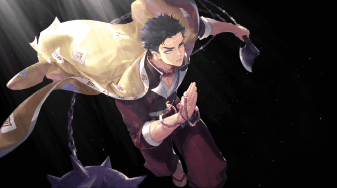

-
Kyojuro Rengoku

- Hashira da Chama
Kyojuro é muito entusiasmado em relação aos seus deveres como Pilar, e muitas vezes parece excêntrico. Ele é amável, gentil e ostenta uma extraordinária técnica e habilidade de esgrima decorrente de rigorosa prática e disciplina.
-
Giyu Tomioka
.gif)
- Hashira da Água
Giyu sempre usa uma expressão séria no rosto. Ele tem uma personalidade reservada e um forte senso de justiça, sem tolerância para com aqueles que não conhecem suas próprias limitações e jogam fora suas vidas.
-
Shinobu Kocho

- Hashira dos Insetos
A aparência calma e tranquila da Pilar do Inseto esconde uma raiva e ódio intensos da mesma contra os demônios, tendo em vista que ela perdeu muitos de seus tsugukos, sua irmã e a sua família para os arqui-inimigos do Esquadrão, estes motivos a fizeram dedicar a sua vida para aniquilá-los e mais do que tudo exterminar o líder dos mesmos Muzan Kibutsuji.
-
Sanemi Shinazugawa
- Hashira do Vento
Sanemi é abrasivo, de sangue quente e teimoso, muitas vezes impulsivo e rápido para atacar. O comportamento frio, rude e desdenhoso de Sanemi é o resultado de perder muitas pessoas com quem ele se importava no passado.
-
Tengen Uzui

- Hashira do Som
Tengen é um indivíduo excêntrico e chamativo, sempre querendo ser "extravagante", possuindo uma necessidade de que tudo seja chamativo e marcante, proclamando-se até mesmo o deus da ostentação e dos festivais.
-
Mitsuri Kanroji

- Hashira do Amor
Mitsuri Kanroji é uma garota emocional e apaixonada que elogia as pessoas em sua cabeça constantemente, provavelmente um fator que contribui para seu apelido "A Hashira do Amor", embora ela seja bastante tímida e facilmente perturbada, ela sempre é gentil com os outros.
-
Obanai Iguro

- Hashira das Serpentes
Obanai possui uma personalidade bastante durona e estrita. Ele também possui uma devoção extrema ao seu trabalho como um pilar, possuindo expectativas extremamente altas para os outros e continuamente lutando ao lado de outros pilares contra Muzan mesmo após ser gravemente ferido e ter perdido sua visão.
-
Muichiro Tokito

- Hashira da Névoa
Muichiro é uma pessoa cabeça-dura que parece constantemente vagar em diversos pensamentos e nunca se concentra em algo, sendo impassível e em certos momentos obtuso ele tende em pensar apenas em si mesmo atuando apenas pela lógica nunca deixando se guiar pelas emoções.
-
Gyomei Himejima
- Hashira da Pedra
Gyomei encarna o arquétipo gigante gentil, sendo surpreendentemente de fala mansa e sensível, apesar de sua aparência intimidadora. Ele também se mostra bastante piedoso, carregando suas contas de oração em todos os momentos e fazendo orações em situações pungentes.